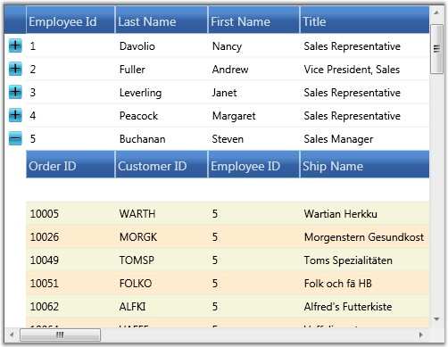

GridData control can display nested tables in a hierarchy using a master-detail configuration. In a hierarchical view, all the tables in the data source are inter-connected by means of relations. Generally a relation between any two tables can take one of the following forms:
· 1:1 (One parent record to one child record)
· 1:n (One parent record to n child records)
· n:1 (n parent records to one child record)
· n:n (n parent record to n child records)
where n is a number of records in a table
With the nested tables (one table nested inside another table), each record in the parent table will have an associated set of records in the child table. Every record in the relation is provided with +/- button called RecordPlusMinus that can be expanded and collapsed to bring the underlying records in the child table for display. The number of tables that can be nested with relations using a GridData control is unlimited.
The Relations Collection
A relation can be created by defining a GridDataRelation and adding it into the Grid.Relations property. This property is an Observable collection of GridDataRelation objects. It manages the entire relations for a grid. The GridDataRelation instance defines a grid relation in the following properties.
|
Property |
Description |
|
RelationalColumn |
Specifies the column that defines the relation. |
|
RelationType |
Specifies the type of relation. Currently, only MasterDetails type relation is supported. |
|
TableProperties |
Used to set the table properties of the child table. |
Example
The following code snippet illustrates how to create a relational column:
|
[C#]
//Fetching parent table. DataSet ds = new DataSet(); using (SqlCeConnection con = new SqlCeConnection(string.Format(@"Data Source = {0}", LayoutControl.FindFile("Northwind.sdf")))) { con.Open(); SqlCeDataAdapter sda = new SqlCeDataAdapter("SELECT * FROM Employees", con); sda.Fill(ds, "Employees"); }
//Fetching child table. using (SqlCeConnection con1 = new SqlCeConnection(string.Format(@"Data Source = {0}", LayoutControl.FindFile("Northwind.sdf")))) { con1.Open(); SqlCeDataAdapter sda1 = new SqlCeDataAdapter("SELECT * FROM Orders", con1); sda1.Fill(ds, "Orders"); } //Adding relation. ds.Relations.Add(new DataRelation("Employee_Orders", ds.Tables[0].Columns["Employee ID"], ds.Tables[1].Columns["Employee ID"])); |
The following code illustrates binding of the above relation to the grid, and also customizing the child table:
|
[XAML]
<syncfusion:GridDataControl x:Name="dataGrid" AutoPopulateColumns="False" AutoPopulateRelations="False" ItemsSource="{StaticResource orderSource}"> ShowAddNewRow="False"> <syncfusion:GridDataControl.Relations > <syncfusion:GridDataRelation RelationalColumn="Employee_Orders" RelationType="MasterDetails" > <syncfusion:GridDataRelation.TableProperties> <syncfusion:GridDataTableProperties AutoPopulateColumns="True" AlternatingRowBackground="BlanchedAlmond" RowBackground="Beige" > </syncfusion:GridDataTableProperties> </syncfusion:GridDataRelation.TableProperties> </syncfusion:GridDataRelation> </syncfusion:GridDataControl.Relations> </syncfusion:GridDataControl> |
The following image shows the output of the above given code:

Figure 190: Illustrates binding a relation data to GDC;
The preceding screen shot shows a GDC bound with a nested table whose child table is set with a customized background.
Auto Generate Relations
The grid can automatically detect the data relations in a data set for display. By default, a relation is created for each such data relation found in the data set. Hence the data relations defined in a data set are sufficient enough for the grid.
To auto-generate the relations, set the AutoPopulateRelations property of the GridData control to true.
|
[XAML]
<syncfusion:GridDataControl x:Name="dataGrid" AutoPopulateColumns="True" AutoPopulateRelations="True" ItemsSource="{StaticResource orderSource}"> ShowAddNewRow="False"/> |